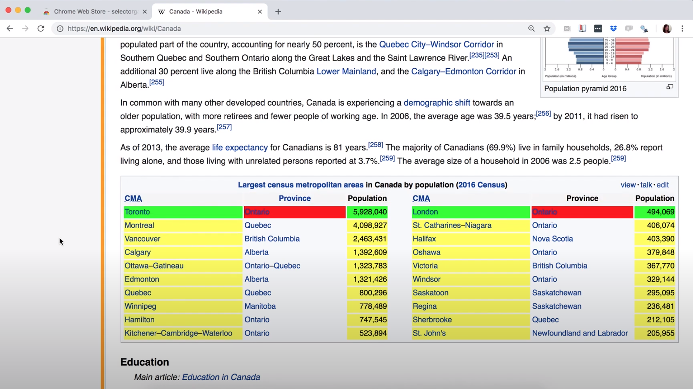

Chapter 2 Reading in data locally and from the web
2.1 Overview
In this chapter, you’ll learn to read tabular data of various formats into R from your local device (e.g. your laptop) and the web. “Reading” (or “loading”) is the process of converting data (stored as plain text, a database, HTML, etc.) into an object (e.g., a data frame) that R can easily access and manipulate. Thus reading data is the gateway to any data analysis; you won’t be able to analyze data unless you’ve loaded it first. And because there are many ways to store data, there are similarly many ways to read data into R. The more time you spend upfront matching the data reading method to the type of data you have, the less time you will have to devote to re-formatting, cleaning and wrangling your data (the second step to all data analyses). It’s like making sure your shoelaces are tied well before going for a run so that you don’t trip later on!
2.2 Chapter learning objectives
By the end of the chapter, readers will be able to:
define the following:
- absolute file path
- relative file path
- Uniform Resource Locator (URL)
read data into R using a relative path and a URL
compare and contrast the following functions:
read_csvread_tsvread_csv2read_delimread_excel
match the following
tidyverseread_*function arguments to their descriptions:filedelimcol_namesskip
choose the appropriate
tidyverseread_*function and function arguments to load a given plain text tabular data set into Ruse
readxlpackage’sread_excelfunction and arguments to load a sheet from an excel file into Rconnect to a database using the
DBIpackage’sdbConnectfunctionlist the tables in a database using the
DBIpackage’sdbListTablesfunctioncreate a reference to a database table that is queriable using the
tblfrom thedbplyrpackageretrieve data from a database query and bring it into R using the
collectfunction from thedbplyrpackageuse
write_csvto save a data frame to a.csvfile(optional) obtain data using application programming interfaces (APIs) and web scraping
- read HTML source code from a URL using the
rvestpackage - read data from the Twitter API using the
rtweetpackage - compare downloading tabular data from a plain text file (e.g.
.csv), accessing data from an API, and scraping the HTML source code from a website
- read HTML source code from a URL using the
2.3 Absolute and relative file paths
This chapter will discuss the different functions we can use to import data into R, but before we can talk about how we read the data into R with these functions, we first need to talk about where the data lives. When you load a data set into R, you first need to tell R where those files live. The file could live on your computer (local) or somewhere on the internet (remote).
The place where the file lives on your computer is called the “path.” You can think of the path as directions to the file. There are two kinds of paths: relative paths and absolute paths. A relative path is where the file is with respect to where you currently are on the computer (e.g., where the file you’re working in is). On the other hand, an absolute path is where the file is in respect to the computer’s filesystem’s base (or root) folder.
Suppose our computer’s filesystem looks like the picture in Figure 2.1, and we are working in a file titled worksheet_02.ipynb. If we want to
read in the .csv file named happiness_report.csv into R, we could do this using either a relative or an absolute path.
We show both choices below.

Figure 2.1: Example file system
Reading happiness_report.csv using a relative path:
happiness_data <- read_csv("data/happiness_report.csv")Reading happiness_report.csv using an absolute path:
happiness_data <- read_csv("/home/dsci-100/worksheet_02/data/happiness_report.csv")So which one should you use? Generally speaking, to ensure your code can be run
on a different computer, you should use relative paths. An added bonus is that
it’s also less typing! Generally, you should use relative paths because the file’s
absolute path (the names of
folders between the computer’s root / and the file) isn’t usually the same
across different computers. For example, suppose Fatima and Jayden are working on a
project together on the happiness_report.csv data. Fatima’s file is stored at
/home/Fatima/project/data/happiness_report.csv,
while Jayden’s is stored at
/home/Jayden/project/data/happiness_report.csv.
Even though Fatima and Jayden stored their files in the same place on their computers (in their home folders), the absolute paths are different due to their different usernames.
If Jayden has code that loads the happiness_report.csv data using an absolute path, the code won’t work on Fatima’s computer.
But the relative path from inside the project folder (data/happiness_report.csv) is the same on both computers; any code that uses relative paths will work on both!
In the additional resources section, we include a link to a short video on the difference between absolute and relative paths. You can also check out the here package, which provides methods for finding and constructing file paths in R.
Your file could be stored locally, as we discussed, or it could also be somewhere on the internet (remotely). A Uniform Resource Locator (URL) (web address) indicates the location of a resource on the internet and helps us retrieve that resource. Next, we will discuss how to get either locally or remotely stored data into R.
2.4 Reading tabular data from a plain text file into R
2.4.1 read_csv to read in comma-separated files
Now that we have learned about where data could be, we will learn about how
to import data into R using various functions. Specifically, we will learn how
to read tabular data from a plain text file (a document containing only text)
into R and write tabular data to a file out of R. The function we use to do this
depends on the file’s format. For example, the last chapter, we learned about using
the tidyverse read_csv function when reading .csv (comma-separated values)
files. In that case, the separator or delimiter that divided our columns was a
comma (,). We only learned the case where the data matched the expected defaults
of the read_csv function
(column names are present, and commas are used as the delimiter between columns).
In this section, we will learn how to read
files that do not satisfy the default expectations of read_csv.
Before we jump into the cases where the data aren’t in the expected default format
for tidyverse and read_csv, let’s revisit the more straightforward
case where the defaults hold, and the only argument we need to give to the function
is the path to the file, data/can_lang.csv. The can_lang data set contains
language data from the 2016 Canadian census. We put data/ before the file’s
name when we are loading the data set because this data set is located in a
sub-folder, named data, relative to where we are running our R code.
Here is what the file would look like in a plain text editor (a program that removes all formatting, like bolding or different fonts):
category,language,mother_tongue,most_at_home,most_at_work,lang_known
Aboriginal languages,"Aboriginal languages, n.o.s.",590,235,30,665
Non-Official & Non-Aboriginal languages,Afrikaans,10260,4785,85,23415
Non-Official & Non-Aboriginal languages,"Afro-Asiatic languages, n.i.e.",1150,445,10,2775
Non-Official & Non-Aboriginal languages,Akan (Twi),13460,5985,25,22150
Non-Official & Non-Aboriginal languages,Albanian,26895,13135,345,31930
Aboriginal languages,"Algonquian languages, n.i.e.",45,10,0,120
Aboriginal languages,Algonquin,1260,370,40,2480
Non-Official & Non-Aboriginal languages,American Sign Language,2685,3020,1145,21930
Non-Official & Non-Aboriginal languages,Amharic,22465,12785,200,33670And here is a review of how we can use read_csv to load it into R. First we
load the tidyverse package to gain access to useful functions for reading the
data.
library(tidyverse)Next we use read_csv to load the data into R, and in that call we specify the
relative path to the file.
canlang_data <- read_csv("data/can_lang.csv")##
## ── Column specification ─────────────────────────────────────────────────────────────────────────────
## cols(
## category = col_character(),
## language = col_character(),
## mother_tongue = col_double(),
## most_at_home = col_double(),
## most_at_work = col_double(),
## lang_known = col_double()
## )Note: it is also normal and expected that a message is printed out after using the
read_csvand related functions. This message functions to let you know the data types of each of the columns that R inferred while reading the data into R. In future when we use this and related functions to load data in this book we will silence these messages to help with readability of the book.
canlang_data## # A tibble: 214 x 6
## category language mother_tongue most_at_home most_at_work lang_known
## <chr> <chr> <dbl> <dbl> <dbl> <dbl>
## 1 Aboriginal languages Aboriginal language… 590 235 30 665
## 2 Non-Official & Non-Aborig… Afrikaans 10260 4785 85 23415
## 3 Non-Official & Non-Aborig… Afro-Asiatic langua… 1150 445 10 2775
## 4 Non-Official & Non-Aborig… Akan (Twi) 13460 5985 25 22150
## 5 Non-Official & Non-Aborig… Albanian 26895 13135 345 31930
## 6 Aboriginal languages Algonquian language… 45 10 0 120
## 7 Aboriginal languages Algonquin 1260 370 40 2480
## 8 Non-Official & Non-Aborig… American Sign Langu… 2685 3020 1145 21930
## 9 Non-Official & Non-Aborig… Amharic 22465 12785 200 33670
## 10 Non-Official & Non-Aborig… Arabic 419890 223535 5585 629055
## # … with 204 more rows2.4.2 Skipping rows when reading in data
Often times information about how data was collected, or other relevant information, is included at the top of the data file. This information is usually written in sentence and paragraph form, with no delimiter because it is not organized into columns. An example of this is shown below. This information gives the data scientist useful context and information about the data, however, it is not well formatted or intended to be read into a data frame cell along with the tabular data that follows later in the file.
Data source: https://ttimbers.github.io/canlang/
Data originally published in: Statistics Canada Census of Population 2016.
Reproduced and distributed on an as is basis with the permission of Statistics Canada.
category,language,mother_tongue,most_at_home,most_at_work,lang_known
Aboriginal languages,"Aboriginal languages, n.o.s.",590,235,30,665
Non-Official & Non-Aboriginal languages,Afrikaans,10260,4785,85,23415
Non-Official & Non-Aboriginal languages,"Afro-Asiatic languages, n.i.e.",1150,445,10,2775
Non-Official & Non-Aboriginal languages,Akan (Twi),13460,5985,25,22150
Non-Official & Non-Aboriginal languages,Albanian,26895,13135,345,31930
Aboriginal languages,"Algonquian languages, n.i.e.",45,10,0,120
Aboriginal languages,Algonquin,1260,370,40,2480
Non-Official & Non-Aboriginal languages,American Sign Language,2685,3020,1145,21930
Non-Official & Non-Aboriginal languages,Amharic,22465,12785,200,33670With this extra information being present at the top of the file, using read_csv as we did previously does not allow us to correctly load the data into R. In the case of this file we end up only reading in one column of the data set:
canlang_data <- read_csv("data/can_lang_meta-data.csv")Note: In contrast to the normal and expected messages above, this time R printed out a warning for us indicating that there might be a problem with how our data is being read in.
canlang_data## # A tibble: 217 x 1
## `Data source: https://ttimbers.github.io/canlang/`
## <chr>
## 1 Data originally published in: Statistics Canada Census of Population 2016.
## 2 Reproduced and distributed on an as is basis with the permission of Statistics Canada.
## 3 category
## 4 Aboriginal languages
## 5 Non-Official & Non-Aboriginal languages
## 6 Non-Official & Non-Aboriginal languages
## 7 Non-Official & Non-Aboriginal languages
## 8 Non-Official & Non-Aboriginal languages
## 9 Aboriginal languages
## 10 Aboriginal languages
## # … with 207 more rowsTo successfully read data like this into R, the skip argument can be useful to tell R how many lines to skip before it should start reading in the data. In the example above, we would set this value to 3.
canlang_data <- read_csv("data/can_lang_meta-data.csv",
skip = 3)
canlang_data## # A tibble: 214 x 6
## category language mother_tongue most_at_home most_at_work lang_known
## <chr> <chr> <dbl> <dbl> <dbl> <dbl>
## 1 Aboriginal languages Aboriginal language… 590 235 30 665
## 2 Non-Official & Non-Aborig… Afrikaans 10260 4785 85 23415
## 3 Non-Official & Non-Aborig… Afro-Asiatic langua… 1150 445 10 2775
## 4 Non-Official & Non-Aborig… Akan (Twi) 13460 5985 25 22150
## 5 Non-Official & Non-Aborig… Albanian 26895 13135 345 31930
## 6 Aboriginal languages Algonquian language… 45 10 0 120
## 7 Aboriginal languages Algonquin 1260 370 40 2480
## 8 Non-Official & Non-Aborig… American Sign Langu… 2685 3020 1145 21930
## 9 Non-Official & Non-Aborig… Amharic 22465 12785 200 33670
## 10 Non-Official & Non-Aborig… Arabic 419890 223535 5585 629055
## # … with 204 more rowsHow did we know to skip 3 lines? We looked at the data! The first three lines of the data had information we didn’t need to import:
Data source: https://ttimbers.github.io/canlang/
Data originally published in: Statistics Canada Census of Population 2016.
Reproduced and distributed on an as is basis with the permission of Statistics Canada.The column names began at line 4, so we skipped the first three lines.
2.4.3 read_tsv to read in tab-separated files
Another common way data is stored is with tabs as the delimiter. Notice the data file, can_lang_tab.tsv, has tabs in between the columns instead of commas.
category language mother_tongue most_at_home most_at_work lang_known
Aboriginal languages Aboriginal languages, n.o.s. 590 235 30 665
Non-Official & Non-Aboriginal languages Afrikaans 10260 4785 85 23415
Non-Official & Non-Aboriginal languages Afro-Asiatic languages, n.i.e. 1150 445 10 2775
Non-Official & Non-Aboriginal languages Akan (Twi) 13460 5985 25 22150
Non-Official & Non-Aboriginal languages Albanian 26895 13135 345 31930
Aboriginal languages Algonquian languages, n.i.e. 45 10 0 120
Aboriginal languages Algonquin 1260 370 40 2480
Non-Official & Non-Aboriginal languages American Sign Language 2685 3020 1145 21930
Non-Official & Non-Aboriginal languages Amharic 22465 12785 200 33670To read in this type of data, we can use the read_tsv to read in .tsv (tab separated values) files.
canlang_data <- read_tsv("data/can_lang_tab.tsv")
canlang_data## # A tibble: 214 x 6
## category language mother_tongue most_at_home most_at_work lang_known
## <chr> <chr> <dbl> <dbl> <dbl> <dbl>
## 1 Aboriginal languages Aboriginal language… 590 235 30 665
## 2 Non-Official & Non-Aborig… Afrikaans 10260 4785 85 23415
## 3 Non-Official & Non-Aborig… Afro-Asiatic langua… 1150 445 10 2775
## 4 Non-Official & Non-Aborig… Akan (Twi) 13460 5985 25 22150
## 5 Non-Official & Non-Aborig… Albanian 26895 13135 345 31930
## 6 Aboriginal languages Algonquian language… 45 10 0 120
## 7 Aboriginal languages Algonquin 1260 370 40 2480
## 8 Non-Official & Non-Aborig… American Sign Langu… 2685 3020 1145 21930
## 9 Non-Official & Non-Aborig… Amharic 22465 12785 200 33670
## 10 Non-Official & Non-Aborig… Arabic 419890 223535 5585 629055
## # … with 204 more rowsLet’s compare the data frame here to the resulting data frame in section 2.4.1 after using read_csv. Notice anything? They look the same! The same number of columns/rows and column names! So we needed to use different tools for the job depending on the file format and our resulting table (canlang_data) in both cases was the same!
2.4.4 read_delim as a more flexible method to get tabular data into R
read_csv and read_tsv are actually just special cases of the more general read_delim function. We can use read_delim to import both comma and tab-separated files (and more), we just have to specify the delimiter. The can_lang.tsv is a different version of this same data set with no column names and uses tabs as the delimiter instead of commas.
Here is how the file would look in a plain text editor:
Aboriginal languages Aboriginal languages, n.o.s. 590 235 30 665
Non-Official & Non-Aboriginal languages Afrikaans 10260 4785 85 23415
Non-Official & Non-Aboriginal languages Afro-Asiatic languages, n.i.e. 1150 445 10 2775
Non-Official & Non-Aboriginal languages Akan (Twi) 13460 5985 25 22150
Non-Official & Non-Aboriginal languages Albanian 26895 13135 345 31930
Aboriginal languages Algonquian languages, n.i.e. 45 10 0 120
Aboriginal languages Algonquin 1260 370 40 2480
Non-Official & Non-Aboriginal languages American Sign Language 2685 3020 1145 21930
Non-Official & Non-Aboriginal languages Amharic 22465 12785 200 33670
Non-Official & Non-Aboriginal languages Arabic 419890 223535 5585 629055To get this into R using the read_delim function, we specify the first argument as the path to the file (as done with read_csv), and then provide values to the delim argument (here a tab, which we represent by "\t") and the col_names argument (here we specify that there are no column names to assign, and give it the value of FALSE). read_csv, read_tsv and read_delim have a col_names argument and the default is TRUE.
\tis an example of an escape character, typically used to represent non-printing characters (like the tab) or characters with special meanings (such as quotation marks).
canlang_data <- read_delim("data/can_lang.tsv",
delim = "\t",
col_names = FALSE)
canlang_data## # A tibble: 214 x 6
## X1 X2 X3 X4 X5 X6
## <chr> <chr> <dbl> <dbl> <dbl> <dbl>
## 1 Aboriginal languages Aboriginal languages, n.o.s. 590 235 30 665
## 2 Non-Official & Non-Aboriginal languages Afrikaans 10260 4785 85 23415
## 3 Non-Official & Non-Aboriginal languages Afro-Asiatic languages, n.i.e. 1150 445 10 2775
## 4 Non-Official & Non-Aboriginal languages Akan (Twi) 13460 5985 25 22150
## 5 Non-Official & Non-Aboriginal languages Albanian 26895 13135 345 31930
## 6 Aboriginal languages Algonquian languages, n.i.e. 45 10 0 120
## 7 Aboriginal languages Algonquin 1260 370 40 2480
## 8 Non-Official & Non-Aboriginal languages American Sign Language 2685 3020 1145 21930
## 9 Non-Official & Non-Aboriginal languages Amharic 22465 12785 200 33670
## 10 Non-Official & Non-Aboriginal languages Arabic 419890 223535 5585 629055
## # … with 204 more rowsData frames in R need to have column names. Thus if you read in data that
don’t have column names, R will assign names automatically. In the example above, R assigns each column a name of X1, X2, X3, X4, X5, X6.
It is best to rename your columns to help differentiate between them (e.g. X1, X2, etc., are not very descriptive names and will make it more confusing as you code). To rename your columns, you can use the rename function from the dplyr package (one of the packages loaded with tidyverse, so we don’t need to load it separately). The first argument is the data set, and in the subsequent arguments you write new_name = old_name for the selected variables to rename. We rename the X1, X2, ..., X6 columns in the canlang_data data frame to more descriptive names below.
canlang_data <- rename(canlang_data,
category = X1,
language = X2,
mother_tongue = X3,
most_at_home = X4,
most_at_work = X5,
lang_known = X6)
canlang_data## # A tibble: 214 x 6
## category language mother_tongue most_at_home most_at_work lang_known
## <chr> <chr> <dbl> <dbl> <dbl> <dbl>
## 1 Aboriginal languages Aboriginal language… 590 235 30 665
## 2 Non-Official & Non-Aborig… Afrikaans 10260 4785 85 23415
## 3 Non-Official & Non-Aborig… Afro-Asiatic langua… 1150 445 10 2775
## 4 Non-Official & Non-Aborig… Akan (Twi) 13460 5985 25 22150
## 5 Non-Official & Non-Aborig… Albanian 26895 13135 345 31930
## 6 Aboriginal languages Algonquian language… 45 10 0 120
## 7 Aboriginal languages Algonquin 1260 370 40 2480
## 8 Non-Official & Non-Aborig… American Sign Langu… 2685 3020 1145 21930
## 9 Non-Official & Non-Aborig… Amharic 22465 12785 200 33670
## 10 Non-Official & Non-Aborig… Arabic 419890 223535 5585 629055
## # … with 204 more rows2.4.5 Reading tabular data directly from a URL
We can also use read_csv, read_tsv or read_delim (and related functions)
to read in data directly from a Uniform Resource Locator (URL) that
contains tabular data. Here, we provide the URL to read_* as the path to the file
instead of a path to a local file on our computer. We need to surround the URL with
quotes similar to when we specify a path on our local computer. All other arguments
that we use are the same as when using these functions with a local file on our computer.
canlang_data <- read_csv(
"https://raw.githubusercontent.com/UBC-DSCI/
introduction-to-datascience/master/data/can_lang.csv")
canlang_data## # A tibble: 1 x 1
## `https://raw.githubusercontent.com/UBC-DSCI/`
## <chr>
## 1 introduction-to-datascience/master/data/can_lang.csv2.4.6 Previewing a data file before reading it into R
In all the examples above, we gave you previews of the data file before we read it into R. Previewing data is essential to see whether or not there are column names, what the delimiters are, and if there are lines you need to skip. You should do this yourself when trying to read in data files. You can preview files in a plain text editor by right-clicking on the file, selecting “Open With,” and choosing a plain text editor (e.g. Notepad).
2.5 Reading tabular data from a Microsoft Excel file
There are many other ways to store tabular data sets beyond plain text files, and similarly, many ways to load those data sets into R. For example, it is very common to encounter,
and need to load into R, data stored as a Microsoft Excel spreadsheet (with the filename extension .xlsx).
To be able to do this, a key thing to know is that even though .csv and .xlsx files look almost
identical when loaded into Excel, the data themselves are stored completely differently.
While .csv files are plain text files, where the characters you see when you open the file in a text editor are exactly the data they represent,
this is not the case for .xlsx files. Take a look at what a .xlsx file would look like in a text editor:
,?'O
_rels/.rels???J1??>E?{7?
<?V????w8?'J???'QrJ???Tf?d??d?o?wZ'???@>?4'?|??hlIo??F
t 8f??3wn
????t??u"/
%~Ed2??<?w??
?Pd(??J-?E???7?'t(?-GZ?????y???c~N?g[^_r?4
yG?O
?K??G?RPX?<??,?'O[Content_Types].xml???n?0E%?J
]TUEe??O??c[???????6q??s??d?m???\???H?^????3} ?rZY? ?:L60?^?????XTP+?|?3???"~?3T1W3???,?#p?R?!??w(??R???[S?D?kP?P!XS(?i?t?$?ei
X?a??4VT?,D?Jq
D
?????u?]??;??L?.8AhfNv}?hHF*??Jr?Q?%?g?U??CtX"8x>?.|????5j?/$???JE?c??~??4iw?????E;?+?S??w?cV+?:???2l???=?2nel???;|?V??????c'?????9?P&Bcj,?'OdocProps/app.xml??1
?0???k????A?u?U?]??{#?:;/<?g?Cd????M+?=???Z?O??R+??u?P?X KV@??M$??a???d?_???4??5v?R????9D????t??Fk?Ú'P?=?,?'OdocProps/core.xml??MO?0
??J?{???3j?h'??(q??U4J
??=i?I'?b??[v?!??{gk?
F2????v5yj??"J???,?d???J???C??l??4?-?`$?4t?K?.;?%c?J??G<?H????
X????z???6?????~q??X??????q^>??tH???*?D???M?g
??D?????????d?:g).?3.??j?P?F?'Oxl/_rels/workbook.xml.rels??Ak1??J?{7???R?^J?kk@Hf7??I?L???E]A?Þ?{a??`f?????b?6xUQ?@o?m}??o????X{???Q?????;?y?\?
O
?YY??4?L??S??k?252j??
??V ?C?g?C]???????
?
???E??TENyf6%
?Y????|??:%???}^ N?Q?N'????)??F?\??P?G??,?'O'xl/printerSettings/printerSettings1.bin?Wmn?
??Sp>?G???q?#
?I??5R'???q????(?L
??m??8F?5< L`??`?A??2{dp??9R#?>7??Xu???/?X??HI?|?
??r)???\?VA8?2dFfq???I]]o
5`????6A ?This type of file representation allows Excel files to store additional things that you cannot store in a .csv file, such as fonts, text formatting, graphics, multiple sheets
and more. And despite looking odd in a plain text editor, we can read Excel spreadsheets into R using the readxl package developed
specifically for this purpose.
library(readxl)
canlang_data <- read_excel("data/can_lang.xlsx")
canlang_data## # A tibble: 214 x 6
## category language mother_tongue most_at_home most_at_work lang_known
## <chr> <chr> <dbl> <dbl> <dbl> <dbl>
## 1 Aboriginal languages Aboriginal language… 590 235 30 665
## 2 Non-Official & Non-Aborig… Afrikaans 10260 4785 85 23415
## 3 Non-Official & Non-Aborig… Afro-Asiatic langua… 1150 445 10 2775
## 4 Non-Official & Non-Aborig… Akan (Twi) 13460 5985 25 22150
## 5 Non-Official & Non-Aborig… Albanian 26895 13135 345 31930
## 6 Aboriginal languages Algonquian language… 45 10 0 120
## 7 Aboriginal languages Algonquin 1260 370 40 2480
## 8 Non-Official & Non-Aborig… American Sign Langu… 2685 3020 1145 21930
## 9 Non-Official & Non-Aborig… Amharic 22465 12785 200 33670
## 10 Non-Official & Non-Aborig… Arabic 419890 223535 5585 629055
## # … with 204 more rowsIf the .xlsx file has multiple sheets, you have to use the sheet argument to specify the sheet number or name. You can also specify cell ranges using the range argument. This functionality is useful when a single sheet contains multiple tables (a sad thing that happens to many Excel spreadsheets since this makes reading in data more difficult).
As with plain text files, you should always explore the data file before importing it into R. Exploring the data beforehand helps you decide which arguments you need to to load the data into R successfully. If you do not have the Excel program on your computer, you can use other programs to preview the file. Examples include Google Sheets and Libre Office.
In Table 2.1 we summarize the read_* functions we covered in this chapter. We also include the read_csv2 function for data separated by semicolons ;, which you may run into with data sets where the decimal is represented by a comma instead of a period (as with some data sets from European countries).
| Data File Type | R Function | R Package |
|---|---|---|
Comma (,) separated files |
read_csv |
readr |
Tab (\t) separated files |
read_tsv |
readr |
Semicolon (;) separated files |
read_csv2 |
readr |
Various formats (.csv, .tsv) |
read_delim |
readr |
Excel files (.xlsx) |
read_excel |
readxl |
Note:
readris a part of thetidyversepackage so we did not need to load this package separately since we loadedtidyverse.
2.6 Reading data from a database
Another very common form of data storage is the relational database. Databases are great when you have large datasets or multiple users working on a project. There are many relational database management systems, such as SQLite, MySQL, PostgreSQL, Oracle, and many more. These different relational database management systems each have their own advantages and limitations. Almost all employ SQL (structured query language) to pull data from the database. Though, you don’t need to know SQL to analyze data from a database; several packages have been written that allows R to connect to relational databases and use the R programming language as the front end (what the user types in) to pull data from them. These different relational database management systems have their own advantages, limitations, and excels in particular scenarios. In this book, we will give examples of how to do this using R with SQLite and PostgreSQL databases.
2.6.1 Connecting to a database
2.6.1.1 Reading data from a SQLite database
SQLite is probably the simplest relational database that one can use in combination with R. SQLite databases are self-contained and usually stored and accessed locally on one computer. Data is usually stored in a file with a .db extension. Similar to Excel files, these are not plain text files and cannot be read in a plain text editor.
The first thing you need to do to read data into R from a database is to connect to the database. We do that using the dbConnect function from the DBI (database interface) package. This does not read in the data, but simply tells R where the database is and opens up a communication channel.
library(DBI)
con_lang_data <- dbConnect(RSQLite::SQLite(), "data/can_lang.db")Often relational databases have many tables, and their power comes from the useful ways they can be joined. Thus anytime you want to access data from a relational database, you need to know the table names. You can get the names of all the tables in the database using the dbListTables function:
tables <- dbListTables(con_lang_data)
tables## [1] "lang"We only get one table name returned from calling dbListTables, which tells us that there is only one table in this database. To reference a table in the database to do things like select columns and filter rows, we use the tbl function from the dbplyr package. The package dbplyr allows us to work with data stored in databases as if they were local data frames, which is useful because we can do a lot with big datasets without actually having to bring these vast amounts of data into your computer!
library(dbplyr)
lang_db <- tbl(con_lang_data, "lang")
lang_db ## # Source: table<lang> [?? x 6]
## # Database: sqlite 3.35.5 [/home/rstudio/introduction-to-datascience/data/can_lang.db]
## category language mother_tongue most_at_home most_at_work lang_known
## <chr> <chr> <dbl> <dbl> <dbl> <dbl>
## 1 Aboriginal languages Aboriginal language… 590 235 30 665
## 2 Non-Official & Non-Aborig… Afrikaans 10260 4785 85 23415
## 3 Non-Official & Non-Aborig… Afro-Asiatic langua… 1150 445 10 2775
## 4 Non-Official & Non-Aborig… Akan (Twi) 13460 5985 25 22150
## 5 Non-Official & Non-Aborig… Albanian 26895 13135 345 31930
## 6 Aboriginal languages Algonquian language… 45 10 0 120
## 7 Aboriginal languages Algonquin 1260 370 40 2480
## 8 Non-Official & Non-Aborig… American Sign Langu… 2685 3020 1145 21930
## 9 Non-Official & Non-Aborig… Amharic 22465 12785 200 33670
## 10 Non-Official & Non-Aborig… Arabic 419890 223535 5585 629055
## # … with more rowsAlthough it looks like we just got a data frame from the database, we didn’t! It’s a reference, showing us data that is still in the SQLite database. It does this because databases are often more efficient at selecting, filtering and joining large data sets than R. And typically, the database will not even be stored on your computer but rather a more powerful machine somewhere on the web. So R is lazy and waits to bring this data into memory until you explicitly tell it to using the collect function from the dbplyr package. Figure 2.2 highlights the difference between a tibble object in R and the output we just got. Notice in the table on the right, the first two lines of the output indicate the source is SQL. The last line doesn’t show how many rows there are (R is trying to avoid performing expensive query operations), whereas the output for the tibble object does.
Figure 2.2: Comparison of a reference to data in a database and a tibble in R
We can look at the SQL commands that are sent to the database when we write
tbl(con_lang_data, "lang") in R with the show_query function from the dbplyr package.
show_query(tbl(con_lang_data, "lang"))## <SQL>
## SELECT *
## FROM `lang`From the output above, we can see the SQL code sent to the database. When we write tbl(con_lang_data, "lang") in R, in the background, the function is translating the R code into SQL, asking the database, and then translating the response back to us. So instead of us needing to know the SQL code ourselves and switching back and forth between R and SQL code, the dbplyr package does that for us.
Now we will filter for only rows in the Aboriginal languages category according to the 2016 Canada Census, and then use collect to finally bring this data into R as a data frame.
aboriginal_lang_db <- filter(lang_db, category == "Aboriginal languages")
aboriginal_lang_db ## # Source: lazy query [?? x 6]
## # Database: sqlite 3.35.5 [/home/rstudio/introduction-to-datascience/data/can_lang.db]
## category language mother_tongue most_at_home most_at_work lang_known
## <chr> <chr> <dbl> <dbl> <dbl> <dbl>
## 1 Aboriginal languages Aboriginal languages, n.o… 590 235 30 665
## 2 Aboriginal languages Algonquian languages, n.i… 45 10 0 120
## 3 Aboriginal languages Algonquin 1260 370 40 2480
## 4 Aboriginal languages Athabaskan languages, n.i… 50 10 0 85
## 5 Aboriginal languages Atikamekw 6150 5465 1100 6645
## 6 Aboriginal languages Babine (Wetsuwet'en) 110 20 10 210
## 7 Aboriginal languages Beaver 190 50 0 340
## 8 Aboriginal languages Blackfoot 2815 1110 85 5645
## 9 Aboriginal languages Carrier 1025 250 15 2100
## 10 Aboriginal languages Cayuga 45 10 10 125
## # … with more rowsaboriginal_lang_data <- collect(aboriginal_lang_db)
aboriginal_lang_data## # A tibble: 67 x 6
## category language mother_tongue most_at_home most_at_work lang_known
## <chr> <chr> <dbl> <dbl> <dbl> <dbl>
## 1 Aboriginal languages Aboriginal languages, n.o… 590 235 30 665
## 2 Aboriginal languages Algonquian languages, n.i… 45 10 0 120
## 3 Aboriginal languages Algonquin 1260 370 40 2480
## 4 Aboriginal languages Athabaskan languages, n.i… 50 10 0 85
## 5 Aboriginal languages Atikamekw 6150 5465 1100 6645
## 6 Aboriginal languages Babine (Wetsuwet'en) 110 20 10 210
## 7 Aboriginal languages Beaver 190 50 0 340
## 8 Aboriginal languages Blackfoot 2815 1110 85 5645
## 9 Aboriginal languages Carrier 1025 250 15 2100
## 10 Aboriginal languages Cayuga 45 10 10 125
## # … with 57 more rowsWhy bother to use the collect function? The data looks pretty similar in both outputs shown above. And dbplyr provides lots of functions similar to filter that
you can use to directly feed the database reference (what tbl gives you) into downstream analysis functions (e.g., ggplot2 for data visualization and lm for
linear regression modeling). However, this does not
work in every case; look what happens when we try to use nrow to count rows in a data frame:
nrow(aboriginal_lang_db)## [1] NAor tail to preview the last 6 rows of a data frame:
tail(aboriginal_lang_db)## Error: tail() is not supported by sql sourcesAdditionally, some operations will not work to extract columns or single values from the reference given by the tbl function. Thus, once you have finished your data wrangling of the tbl database reference object, it is advisable to bring it into your local machine’s memory using collect as a data frame. Usually, databases are very big! Reading the object into your local machine may give an error or take a lot of time to run so be careful if you plan to do this. This is one reason we may want to filter rows or select columns first before reading it in!
2.6.1.2 Reading data from a PostgreSQL database
PostgreSQL (also called Postgres) is a very popular and open-source option for relational database software. Unlike SQLite, PostgreSQL uses
a client–server database engine, as it was designed to be used and accessed on a network. This means that you have to provide more
information to R when connecting to Postgres databases. The additional information that you need to include when you call the dbConnect
function is listed below:
dbname- the name of the database (a single PostgreSQL instance can host more than one database)host- the URL pointing to where the database is locatedport- the communication endpoint between R and the PostgreSQL database (this is typically 5432 for PostgreSQL)user- the username for accessing the databasepassword- the password for accessing the database
Additionally, we must use the RPostgres package instead of RSQLite in the dbConnect function call.
Below we demonstrate how to connect to a version of the can_mov_db database, which contains information about Canadian movies (note - this is a synthetic database).
library(RPostgres)
can_mov_db_con <- dbConnect(RPostgres::Postgres(), dbname = "can_mov_db",
host = "r7k3-mds1.stat.ubc.ca", port = 5432,
user = "user0001", password = '################')2.6.2 Interacting with a database
After opening the connection, everything looks and behaves almost identically to when we were using an SQLite database in R. For example, we can again
use dbListTables to find out what tables are in the can_mov_db database:
dbListTables(can_mov_db_con) [1] "themes" "medium" "titles" "title_aliases" "forms"
[6] "episodes" "names" "names_occupations" "occupation" "ratings" We see that there are 10 tables in this database. Let’s first look at the "ratings" table to find the lowest rating that exists in the can_mov_db database:
ratings_db <- tbl(can_mov_db_con, "ratings")
ratings_db# Source: table<ratings> [?? x 3]
# Database: postgres [user0001@r7k3-mds1.stat.ubc.ca:5432/can_mov_db]
title average_rating num_votes
<chr> <dbl> <int>
1 The Grand Seduction 6.6 150
2 Rhymes for Young Ghouls 6.3 1685
3 Mommy 7.5 1060
4 Incendies 6.1 1101
5 Bon Cop, Bad Cop 7.0 894
6 Goon 5.5 1111
7 Monsieur Lazhar 5.6 610
8 What if 5.3 1401
9 The Barbarian Invations 5.8 99
10 Away from Her 6.9 2311
# … with more rowsTo find the lowest rating that exists in the data base, we first need to extract the average_rating column using select:
avg_rating_db <- select(ratings_db, average_rating)
avg_rating_db# Source: lazy query [?? x 1]
# Database: postgres [user0001@r7k3-mds1.stat.ubc.ca:5432/can_mov_db]
average_rating
<dbl>
1 6.6
2 6.3
3 7.5
4 6.1
5 7.0
6 5.5
7 5.6
8 5.3
9 5.8
10 6.9
# … with more rowsNext we use min to find the minimum rating in that column:
min(avg_rating_db)Error in min(avg_rating_db) : invalid 'type' (list) of argumentInstead of the minimum, we get an error! This is another example of when we need to use the collect function to bring the data into R for further computation:
avg_rating_data <- collect(avg_rating_db)
min(avg_rating_data)[1] 1We see the lowest rating given to a movie is 1, indicating that it must have been a really bad movie…
2.6.3 Why should we bother with databases at all?
Opening a database stored in a .db file involved a lot more effort than just opening a .csv, .tsv, or any of the other plain text or Excel formats. It was a bit of a pain to use a database in that setting since we had to use dbplyr to translate tidyverse-like commands (filter, select, head, etc.) into SQL commands that the database understands. Not all tidyverse commands can currently be translated with SQLite databases. For example, we can compute a mean with an SQLite database but can’t easily compute a median. So you might be wondering why should we use databases at all?
Databases are beneficial in a large-scale setting:
- they enable storing large data sets across multiple computers with automatic redundancy and backups
- they allow multiple users to access them simultaneously and remotely without conflicts and errors
- they provide mechanisms for ensuring data integrity and validating input
- they provide security to keep data safe
For example, there are billions of Google searches conducted daily. Can you imagine if Google stored all of the data from those queries in a single
.csv file!? Chaos would ensue!
2.7 Writing data from R to a .csv file
At the middle and end of a data analysis, we often want to write a data frame that has changed (either through filtering, selecting, mutating or summarizing) to a file
to share it with others or use it for another step in the analysis. The most straightforward way to do this is to use the write_csv function from the tidyverse package.
The default arguments for this file are to use a comma (,) as the delimiter and include column names. Below we demonstrate creating a new version of the Canadian languages data set without the official languages category according to the Canadian 2016 Census, and then writing this to a .csv file:
no_official_lang_data <- filter(can_lang, category != "Official languages")
write_csv(no_official_lang_data, "data/no_official_languages.csv")2.8 Obtaining data from the web
This section is not required reading for the remainder of the textbook. It is included for those readers interested in learning a little bit more about how to obtain different types of data from the web.
Data doesn’t just magically appear on your computer; you need to get
it from somewhere. Earlier in the chapter we showed you how to access data
stored in a plaintext, spreadsheet-like format (e.g., comma- or tab-separated)
from a web URL using one of the read_* functions from the tidyverse. But
as time goes on, it is increasingly uncommon to find
data (especially large amounts of data) in this format available for download
from a URL. Instead, websites now often offer something known as an application
programming interface (API), which provides a programmatic way to ask
for subsets of a dataset. This allows the website owner to control who has access
to the data, what portion of the data they have access to, and how much data they can access.
Typically, the website owner will give you a token (a secret string
of characters somewhat like a password) that you have to provide when accessing the API.
Another interesting thought: websites themselves are data! When you type a URL into your browser window, your browser asks the web server (another computer on the internet whose job it is to respond to requests for the website) to give it the website’s data, and then your browser translates that data into something you can see. If the website shows you some information that you’re interested in, you could create a data set for yourself by copying and pasting that information into a file. This process of taking information directly from what a website displays is called web scraping (or sometimes screen scraping). Now, of course, copying and pasting information manually is a painstaking and error-prone process, especially when there is a lot of information to gather. So instead of asking your browser to translate the information that the web server provides into something you can see, you can collect that data programmatically—in the form of hypertext markup language (HTML) and cascading style sheet (CSS) code—and process it to extract useful information. HTML provides the basic structure of a site and tells the webpage how to display the content (e.g. titles, paragraphs, bullet lists etc.). Whereas CSS helps style the content and tells the webpage how the HTML elements should be presented (e.g. colours, layouts, fonts etc.).
This subsection will show you the basics of both web scraping
with the rvest R package
and accessing the Twitter API
using the rtweet R package.
2.8.1 Web scraping
HTML and CSS selectors
When you enter a URL into your browser, your browser connects to the web server at that URL and asks for the source code for the website. This is the data that the browser translates into something you can see; so if we are going to create our own data by scraping a website, we have to first understand what that data looks like! For example, let’s say we are interested in knowing the average rental price (per square foot) of the most recently available one-bedroom apartments in Vancouver from https://vancouver.craigslist.org. When we visit the Vancouver Craigslist website and search for one-bedroom apartments, this is what we are shown:

Based on what our browser shows us, it’s pretty easy to find the size and price for each apartment listed. But we would like to be able to obtain that information using R, without any manual human effort or copying and pasting. We do this by examining the source code that the web server actually sent our browser to display for us. We show a snippet of it below (and link to the entire source code here):
<span class="result-meta">
<span class="result-price">$800</span>
<span class="housing">
1br -
</span>
<span class="result-hood"> (13768 108th Avenue)</span>
<span class="result-tags">
<span class="maptag" data-pid="6786042973">map</span>
</span>
<span class="banish icon icon-trash" role="button">
<span class="screen-reader-text">hide this posting</span>
</span>
<span class="unbanish icon icon-trash red" role="button" aria-hidden="true"></span>
<a href="#" class="restore-link">
<span class="restore-narrow-text">restore</span>
<span class="restore-wide-text">restore this posting</span>
</a>
</span>
</p>
</li>
<li class="result-row" data-pid="6788463837">
<a href="https://vancouver.craigslist.org/nvn/apa/d/north-vancouver-luxury-1-bedroom/6788463837.html" class="result-image gallery" data-ids="1:00U0U_lLWbuS4jBYN,1:00T0T_9JYt6togdOB,1:00r0r_hlMkwxKqoeq,1:00n0n_2U8StpqVRYX,1:00M0M_e93iEG4BRAu,1:00a0a_PaOxz3JIfI,1:00o0o_4VznEcB0NC5,1:00V0V_1xyllKkwa9A,1:00G0G_lufKMygCGj6,1:00202_lutoxKbVTcP,1:00R0R_cQFYHDzGrOK,1:00000_hTXSBn1SrQN,1:00r0r_2toXdps0bT1,1:01616_dbAnv07FaE7,1:00g0g_1yOIckt0O1h,1:00m0m_a9fAvCYmO9L,1:00C0C_8EO8Yl1ELUi,1:00I0I_iL6IqV8n5MB,1:00b0b_c5e1FbpbWUZ,1:01717_6lFcmuJ2glV">
<span class="result-price">$2285</span>
</a>
<p class="result-info">
<span class="icon icon-star" role="button">
<span class="screen-reader-text">favorite this post</span>
</span>
<time class="result-date" datetime="2019-01-06 12:06" title="Sun 06 Jan 12:06:01 PM">Jan 6</time>
<a href="https://vancouver.craigslist.org/nvn/apa/d/north-vancouver-luxury-1-bedroom/6788463837.html" data-id="6788463837" class="result-title hdrlnk">Luxury 1 Bedroom CentreView with View - Lonsdale</a>
Oof…you can tell that the source code for a web page is not really designed for humans to understand easily. However, if you look through it closely, you will find that the information we’re interested in is hidden among the muck. For example, near the top of the snippet above you can see a line that looks like
<span class="result-price">$800</span>That is definitely storing the price of a particular apartment. With some more investigation, you should be able to find things like the date and time of the listing, the address of the listing, and more. So this source code most likely contains all the information we are interested in!
Let’s dig into that line above a bit more. You can see that that bit of code
has an opening tag (words between < and >, like <span>) and a closing tag
(the same with a slash, like </span>). HTML source code generally stores
its data between opening and closing tags like these. Tags are keywords which tell the web browser how to display or format the content. Above you can see that
the information we want ($800) is stored between an opening and closing
tag (<span> and </span>). In the opening tag, you can also see a very useful
“class” (a special word that is sometimes included with opening tags):
class="result-price". Since we want R
to programmatically sort through all of the source code for the website to find
apartment prices, maybe we can look for all the tags with the "result-price"
class, and grab the information between the opening and closing tag. Indeed,
take a look at another line of the source snippet above:
<span class="result-price">$2285</span>It’s yet another price for an apartment listing, and the tags surrounding it
have the "result-price" class. Wonderful! Now that we know what pattern we
are looking for—a dollar amount between opening and closing tags that have the
"result-price" class—we should be able to use code to pull out all of the
matching patterns from the source code to obtain our data. This sort of “pattern”
is known as a CSS selector (where CSS stands for cascading style sheet).
The above was a simple example of “finding the pattern to look for”; many
websites are quite a bit larger and more complex, and so is their website
source code. Fortunately, there are tools available to make this process
easier. For example,
SelectorGadget from the Chrome Web Store is
an open-source tool that simplifies identifying the generating and finding CSS selectors.
At the end of the chapter in the additional resources section, we include a link to
a short video on how to install and use the SelectorGadget tool to
obtain CSS selectors for use in web scraping.
After installing and enabling the tool, you can click the
website element for which you want an appropriate selector. For
example, if we click the price of an apartment listing, we
find that SelectorGadget shows us the selector .result-price
in its toolbar, and highlights all the other apartment
prices that would be obtained using that selector.

If we then click the size of an apartment listing, SelectorGadget shows us
the span selector, and highlights much of the page; this indicates that the
span selector is not specific enough to just capture apartment sizes.

To narrow the selector, we can click one of the highlighted elements that
we do not want. For example, we can deselect the “pic/map” links,
resulting in only the data we want highlighted using the .housing selector.

So to scrape information about the square footage and rental price
of apartment listings, we need to use
the two CSS selectors .housing and .result-price, respectively.
The selector gadget returns them to us as a comma separated list (here
.housing , .result-price), which is exactly the format we need to provide to
R if we are using more than one CSS selector.
Stop! Are you allowed to scrape that website?
Before scraping data from the web, you should always check whether or not
you are allowed to scrape it! There are two documents that are important
for this: the robots.txt file and the Terms of Service
document. Let’s take a look at Craigslist’s Terms of Service document:
“You agree not to copy/collect CL content via robots, spiders, scripts, scrapers, crawlers, or any automated or manual equivalent (e.g., by hand).”
source: https://www.craigslist.org/about/terms.of.use
Want to learn more about the legalities of web scraping and crawling? Read this blog post titled “Web Scraping and Crawling Are Perfectly Legal, Right?” by Benoit Bernard.
So what to do now? Well, we could ask the owner of Craigslist for permission to scrape. However, we are not likely to get a response, and even if we did they would not likely give us permission. The more realistic answer is that we simply cannot scrape Craigslist. If we still want to find data about rental prices in Vancouver, we must go elsewhere.
To continue learning how to scrape data from the web, let’s instead scrape data on the population of Canadian cities from Wikipedia. We have checked the Terms of Service document, and it does not mention that web scraping is disallowed. We will use the SelectorGadget tool to pick elements that we are interested in (city names and population counts) and deselect others to indicate that we are not interested in them (province names), as shown in the screenshot below.

We include a link to a short video tutorial on this process at the end of the chapter in the additional resources section. SelectorGadget provides in its toolbar the following list of CSS selectors to use:
td:nth-child(5),
td:nth-child(7),
.infobox:nth-child(122) td:nth-child(1),
.infobox td:nth-child(3)Now that we have the CSS selectors that describe the properties of the elements that we want to target (e.g. has a tag name price), we can use it to find certain elements in web pages and extract data.
Using rvest
Now that we have our CSS selectors we can use the rvest R package to scrape our
desired data from the website. We start by loading the rvest package:
library(rvest)Next, we tell R what page we want to scrape by providing the webpage’s URL in quotations to the function read_html:
page <- read_html("https://en.wikipedia.org/wiki/Canada")The read_html function directly downloads the source code for the page at
the URL you specify, just like your browser would if you navigated to that site. But
instead of displaying the website to you, the read_html function just returns
the HTML source code itself, which we have
stored in the page variable. Next, we send the page object to the html_nodes
function, along with the CSS selectors we obtained from
the SelectorGadget tool. Make sure to surround the selectors with quotations; the function, html_nodes, expects that
argument is a string. The html_nodes function then selects nodes from the HTML document that
match the CSS selectors you specified.
A node is an HTML tag pair (e.g. <td> and </td> which defines the cell of a table) combined with the content stored between the tags. For our
CSS selector td:nth-child(5), an example node that would be selected would
be:
<td style="text-align:left;background:#f0f0f0;">
<a href="/wiki/London,_Ontario" title="London, Ontario">London</a>
</td>We store the result of the html_nodes function in the population_nodes variable.
Note that below we use the paste function with a comma separator (sep=",")
to build the list of selectors. The paste function converts elements to character and combines the values into a list. We use this function to build the list of selectors to maintain code readability; this avoids
having one very long line of code with the string
"td:nth-child(5),td:nth-child(7),.infobox:nth-child(122) td:nth-child(1),.infobox td:nth-child(3)"
as the second argument of html_nodes:
selectors <- paste("td:nth-child(5)",
"td:nth-child(7)",
".infobox:nth-child(122) td:nth-child(1)",
".infobox td:nth-child(3)", sep=",")
population_nodes <- html_nodes(page, selectors)
head(population_nodes)## {xml_nodeset (6)}
## [1] <td style="text-align:right;">5,928,040</td>
## [2] <td style="text-align:left;background:#f0f0f0;"><a href="/wiki/London,_Ontario" title="London, ...
## [3] <td style="text-align:right;">494,069\n</td>
## [4] <td style="text-align:right;">4,098,927</td>
## [5] <td style="text-align:left;background:#f0f0f0;">\n<a href="/wiki/St._Catharines" title="St. Ca ...
## [6] <td style="text-align:right;">406,074\n</td>Next we extract the meaningful data—in other words, we get rid of the HTML code syntax and tags—from
the nodes using the html_text
function. In the case of the example
node above, html_text function returns "London".
population_text <- html_text(population_nodes)
head(population_text)## [1] "5,928,040" "London" "494,069\n"
## [4] "4,098,927" "St. Catharines–Niagara" "406,074\n"Fantastic! We seem to have extracted the data of interest from the
raw HTML source code. But we are not quite done; the data
is not yet in an optimal format for data analysis. Both the city names and
population are encoded as characters in a single vector, instead of being in a
data frame with one character column for city and one numeric column for
population (like a spreadsheet).
Additionally, the populations contain commas (not useful for programmatically
dealing with numbers), and some even contain a line break character at the end
(\n). In chapter 3, we will learn more about how to wrangle data
such as this into a more useful format for data analysis using R.
2.8.2 Using an API
Rather than posting a data file at a URL for you to download, many websites these days provide an API that must be accessed through a programming language like R. The benefit of this is that data owners have much more control over the data they provide to users. However, unlike web scraping, there is no consistent way to access an API across websites. Every website typically has its own API designed specially for its own use-case. Therefore we will just provide one example of accessing data through an API in this book, with the hope that it gives you enough of a basic idea that you can learn how to use another API if needed.
In particular, in this book we will show you the basics of how to use
the rtweet package in R
to access data from the Twitter API. One nice feature of this particular
API is that you don’t need a special token to access it; you simply need to
make an account with them. Your access to the data will then be authenticated and controlled through
your account username and password. If you have a Twitter account already (or are willing to make one), you can follow
along with the examples that we show here. To get started, load the rtweet package:
library(rtweet)This package provides an extensive set of functions to search Twitter for tweets, users, their followers, and more. Let’s construct a small dataset of the last 400 tweets and retweets from the Tidyverse account. A few of the most recent tweets are shown below.
](img/tidyverse_twitter.png)
Figure 2.3: The Tidyverse Twitter feed. Source
Stop! Think about your API usage carefully!
When you access an API, you are initiating a transfer of data from a web server to your computer. Web servers are expensive to run and do not have infinite resources. If you try to ask for too much data at once, you can use up a huge amount of the server’s bandwidth. If you try to ask for data too frequently—e.g., if you make many requests to the server in quick succession—you can also bog the server down and make it unable to talk to anyone else. Most servers have mechanisms to revoke your access if you are not careful, but you should try to prevent issues from happening in the first place by being extra careful with how you write and run your code. You should also keep in mind that when a website owner grants you API access, they also usually specify a limit (or quota) of how much data you can ask for. Be careful not to overrun your quota! In this example, we should take a look at the Twitter website to see what limits we should abide by when using the API.
Using rtweet
After checking the Twitter website, it seems like asking for 400 tweets one time is acceptable.
So we can use the get_timelines function to ask for the last 400 tweets from the Tidyverse account.
tidyverse_tweets <- get_timelines('tidyverse', n=400)When you call the get_timelines for the first time (or any other rtweet function that accesses the API),
you will see a browser pop-up that looks something like this:
Figure 2.4: The rtweet authorization prompt.
This is the rtweet package asking you to provide your own Twitter account’s login information.
When rtweet talks to the Twitter API, it uses your account information to authenticate requests;
Twitter then can keep track of how much data you’re asking for, and how frequently you’re asking.
If you want to follow along with this example using your own Twitter account, you should read
over the list of permissions you are granting rtweet very carefully and make sure you are comfortable
with it. Note that rtweet can be used to manage most aspects of your account (make posts, follow others, etc.),
which is why rtweet asks for such extensive permissions.
If you decide to allow rtweet to talk to the Twitter API using your account information, then
input your username and password and hit “Sign In.” Twitter will probably send you an email to say
that there was an unusual login attempt on your account, and in that case you will have to take
the one-time code they send you and provide that to the rtweet login page too.
Every API has its own way to authenticate users when they try to access data. Many APIs require you to sign up to receive a token, which is a secret password that you input into the R package (like
rtweet) that you are using to access the API.
With the authentication setup out of the way, let’s run the get_timelines function again to actually access
the API and take a look at what was returned:
tidyverse_tweets <- get_timelines('tidyverse', n=400)
tidyverse_tweets## # A tibble: 293 x 71
## created_at reply_to_status_id quoted_created_at reply_to_user_id reply_to_screen_name
## <dttm> <lgl> <dttm> <lgl> <lgl>
## 1 2021-04-29 11:59:04 NA NA NA NA
## 2 2021-04-26 17:05:47 NA NA NA NA
## 3 2021-04-24 09:13:12 NA NA NA NA
## 4 2021-04-18 06:06:21 NA NA NA NA
## 5 2021-04-12 05:48:33 NA NA NA NA
## 6 2021-04-08 17:45:34 NA NA NA NA
## 7 2021-04-01 05:01:38 NA NA NA NA
## 8 2021-03-25 06:05:49 NA NA NA NA
## 9 2021-03-18 17:16:21 NA NA NA NA
## 10 2021-03-12 19:12:49 NA NA NA NA
## # … with 283 more rows, and 66 more variables: is_quote <lgl>, is_retweet <lgl>,
## # quoted_verified <lgl>, retweet_verified <lgl>, protected <lgl>, verified <lgl>,
## # account_lang <lgl>, profile_background_url <lgl>, user_id <dbl>, status_id <dbl>,
## # screen_name <chr>, text <chr>, source <chr>, ext_media_type <lgl>, lang <chr>,
## # quoted_status_id <dbl>, quoted_text <chr>, quoted_source <chr>, quoted_user_id <dbl>,
## # quoted_screen_name <chr>, quoted_name <chr>, quoted_location <chr>, quoted_description <chr>,
## # retweet_status_id <dbl>, retweet_text <chr>, retweet_source <chr>, retweet_user_id <dbl>,
## # retweet_screen_name <chr>, retweet_name <chr>, retweet_location <chr>,
## # retweet_description <chr>, place_url <lgl>, place_name <lgl>, place_full_name <lgl>,
## # place_type <lgl>, country <lgl>, country_code <lgl>, status_url <chr>, name <chr>,
## # location <lgl>, description <chr>, url <chr>, profile_url <chr>, profile_expanded_url <chr>,
## # profile_banner_url <chr>, profile_image_url <chr>, display_text_width <dbl>,
## # favorite_count <dbl>, retweet_count <dbl>, quote_count <lgl>, reply_count <lgl>,
## # quoted_favorite_count <dbl>, quoted_retweet_count <dbl>, quoted_followers_count <dbl>,
## # quoted_friends_count <dbl>, quoted_statuses_count <dbl>, retweet_favorite_count <dbl>,
## # retweet_retweet_count <dbl>, retweet_followers_count <dbl>, retweet_friends_count <dbl>,
## # retweet_statuses_count <dbl>, followers_count <dbl>, friends_count <dbl>, listed_count <dbl>,
## # statuses_count <dbl>, favourites_count <dbl>The data has quite a few variables! (Notice that the output above shows that we have a data table with 293 rows and 71 columns). Let’s reduce this down to a few variables of interest: created_at, retweet_screen_name, is_retweet, and text.
tidyverse_tweets <- tidyverse_tweets %>% select(created_at, retweet_screen_name,
is_retweet, text)
tidyverse_tweets## # A tibble: 293 x 4
## created_at retweet_screen_na… is_retweet text
## <dttm> <chr> <lgl> <chr>
## 1 2021-04-29 11:59:04 yutannihilat_en TRUE "Just curious, after the release of R 4.1, will…
## 2 2021-04-26 17:05:47 statwonk TRUE "List columns provide a ton of leverage! 💪 The…
## 3 2021-04-24 09:13:12 topepos TRUE "A new release of the {{recipes}} #rstats packa…
## 4 2021-04-18 06:06:21 ninarbrooks TRUE "Always typing `? pivot_longer()`? The PMA Data…
## 5 2021-04-12 05:48:33 rfunctionaday TRUE "If you are fluent in {dplyr} and wish to learn…
## 6 2021-04-08 17:45:34 RhesusMaCassidy TRUE "R-Ladies of Göttingen! The organizers @RLadies…
## 7 2021-04-01 05:01:38 dvaughan32 TRUE "I am ridiculously excited to announce that clo…
## 8 2021-03-25 06:05:49 rdpeng TRUE "New book out on using tidyverse tools for data…
## 9 2021-03-18 17:16:21 SolomonKurz TRUE "The 0.2.0 version of my #brms + #tidyverse tra…
## 10 2021-03-12 19:12:49 hadleywickham TRUE "rvest 1.0.0 out now! — https://t.co/81P4vY3zEM…
## # … with 283 more rowsIf you look back up at the image of the Tidyverse twitter page, you will
recognize the text of the most recent few tweets in the above dataframe. In
other words, we have successfully created a small dataset using the Twitter
API—neat! This data is also quite different from what we obtained from web scraping;
it is already well-organized into a tidyverse dataframe (although not every API
will provide data in such a nice format).
From this point onward, the tidyverse_tweets dataframe is stored on your
machine, and you can play with it to your heart’s content. For example, you can use
write_csv to save it to a file and read_csv to read it into R again later;
and after reading the next few chapters you will have the skills to
compute the percentage of retweets versus tweets, find the most oft-retweeted
account, make visualizations of the data, and much more! If you decide that you want
to ask the Twitter API for more data
(see the rtweet page
for more examples of what is possible), just be mindful as usual about how much
data you are requesting and how frequently you are making requests.
2.9 Additional resources
- The
readrpage on the tidyverse website is where you should look if you want to learn more about the functions in this chapter, the full set of arguments you can use, and other related functions. The site also provides a very nice cheat sheet that summarizes many of the data wrangling functions from this chapter. - Sometimes you might run into data in such poor shape that none of the reading functions we cover in this chapter works. In that case, you can consult the data import chapter from R for Data Science, which goes into a lot more detail about how R parses text from files into data frames.
- The documentation for many of the reading functions we cover in this chapter can be found on the tidyverse website. This site shows you the full set of arguments available for each function.
- The
herepackage provides a way for you to contruct or find your files’ paths. - The
readxldocumentation provides more details on reading data from Excel, such as reading in data with multiple sheets, or specifying the cells to read in. - The
riopackage provides an alternative set of tools for reading and writing data in R. It aims to be a “Swiss army knife” for data reading/writing/converting, and supports a wide variety of data types (including data formats generated by other statistical software like SPSS and SAS). - This video from the Udacity course “Linux Command Line Basics”* provides a good explanation of absolute versus relative paths.
- If you read the subsection on obtaining data from the web via scraping and APIs, we provide two companion tutorial video links:
- A brief video tutorial on using the SelectorGadget tool to obtain desired CSS selectors for extracting the price and size data for apartment listings on CraigsList
- Another brief video tutorial on using the SelectorGadget tool to obtain desired CSS selectors for extracting Canadian city names and 2016 census populations from Wikipedia
- The
politepackage provides a set of tools for responsibly scraping data from websites.